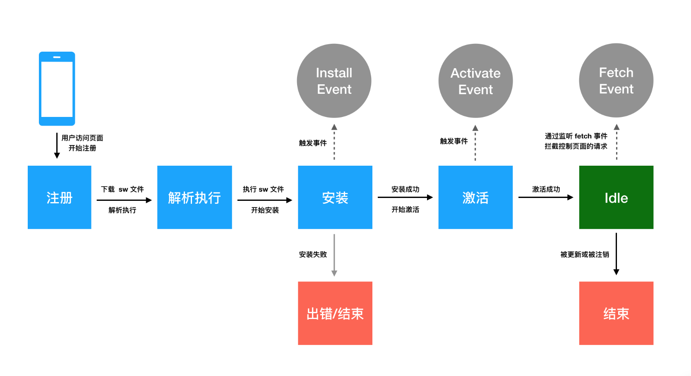

PWA
PWA (Progressive Web Apps) 渐进式 web 应用，相关功能可以在旧项目中逐步使用
web程序
- 不需要安装，更容易使用
- 可以通过 url 直接分享 (linked)
原生应用
- 可以离线使用，体验更好 (offline)
- 在主页点击icon，直接访问 (homescreen)
- 有推送功能 (push/notification)
PWA是一种构建web程序的新理念：
- Discoverable 可以容易被发现，直接使用
- Installable 可以出现在设备的主屏幕
- Linkable 可以通过URL直接分享
- Network independent 可以离线使用
- Progressive 老版本浏览器仍可以使用，新浏览器可以使用全部功能。
- Re-engageable 有新内容可以及时更新，发推送
- Responsive 可以在不同屏幕的设备使用
- Safe 安全性
相关技术：
- Web App Manifest
- 一个json文件，包含了 Web App 配置信息
- Service Worker
- 离线缓存文件
- Web Push Notification
- Background Sync
Service Worker
Service Worker 运行在 worker 上下文，不能访问DOM。它运行在其他线程中，不会造成阻塞。
本质是 web 应用与浏览器之间的代理服务器。负责控制关联页面，拦截修改访问和资源请求，细粒度的控制资源缓存。
Service Worker 只能使用 https。
// 注册 service worker
// 如果注册成功，service worker 就会被下载到客户端，并尝试安装、激活
if ('serviceWorker' in navigator) {
navigator.serviceWorker
.register('/sw-test/sw.js', { scope: '/sw-test/' })
.then(function(reg) {
if(reg.installing) {
console.log('Service worker installing');
} else if(reg.waiting) {
console.log('Service worker installed');
} else if(reg.active) {
console.log('Service worker active');
}
}).catch(function(error) {
// registration failed
console.log('Registration failed with ' + error);
});
}
sw.js
console.log('service worker 注册成功')
var cacheName = 'demo-v1';
var cacheFiles = [
// '/pwa/index.html',
'/pwa/scripts/index.js',
'/pwa/styles/style.css',
'/pwa/images/cpu.png',
'/pwa/images/error.png',
];
// install event 设置需要缓存的资源 安装 sw 时会调用
self.addEventListener('install', function (event) {
console.log('service worker 安装成功')
event.waitUntil(
// 设置缓存的文件列表
caches.open(cacheName).then(function (cache) {
// Takes an array of URLs, retrieves them,
// and adds the resulting response objects to the given cache.
return cache.addAll(cacheFiles);
})
);
});
// 主要用途是清理先前版本的service worker 脚本中使用的资源
self.addEventListener('activate', function (event) {
console.log('service worker activate 激活成功');
});
// fetch event
self.addEventListener('fetch', function (event) {
console.log('service worker fetch');
event.respondWith(
caches.match(event.request)
.then(function (response) {
if (response !== undefined) {
console.log(`fetch ${event.request.url}, response != undefined`);
return response;
} else {
console.log(`fetch ${event.request.url.path}, response == undefined`);
// scope 范围内的请求都会拦截到，可以自定义处理逻辑
return fetch(event.request).then(function (response) {
// let responseClone = response.clone();
// caches.open(cacheName).then(function (cache) {
// cache.put(event.request, responseClone);
// });
return response;
}).catch(function () {
return caches.match('/error.png');
});
}
}))
});
生命周期

Web App Manifest
- https://developer.mozilla.org/en-US/docs/Web/Manifest
- https://developers.google.com/web/fundamentals/app-install-banners/
Background Sync
// Register your service worker:
navigator.serviceWorker.register('/sw.js');
// Then later, request a one-off sync:
navigator.serviceWorker.ready.then(function(swRegistration) {
return swRegistration.sync.register('myFirstSync');
});
// Then listen for the event in /sw.js:
self.addEventListener('sync', function(event) {
if (event.tag == 'myFirstSync') {
event.waitUntil(doSomeStuff());
}
});
doSomeStuff 返回 promise，做想做的事。如果 reject 则下次会重试
Debug 调试
教程：https://lavas-project.github.io/pwa-book/chapter04/4-service-worker-debug.html
在 Chrome DevTools 的 Application 标签页勾选 Update on reload，Chrome 会在每次刷新时去访问 Service Worker 文件并重新安装和激活。
参考：
- w3c 官方文档：https://w3c.github.io/ServiceWorker/#service-worker-concept
- lavas 文档：https://lavas-project.github.io/pwa-book/chapter04/3-service-worker-dive.html
- https://developer.mozilla.org/zh-CN/docs/Web/Apps/Progressive
- 介绍：https://codelabs.developers.google.com/codelabs/your-first-pwapp/#0
- WebAssembly https://zhuanlan.zhihu.com/p/30513129